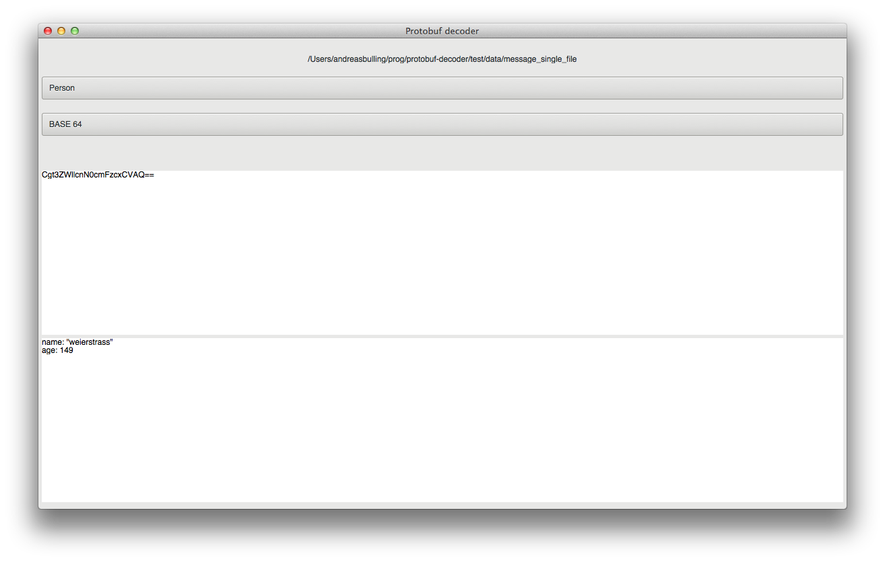
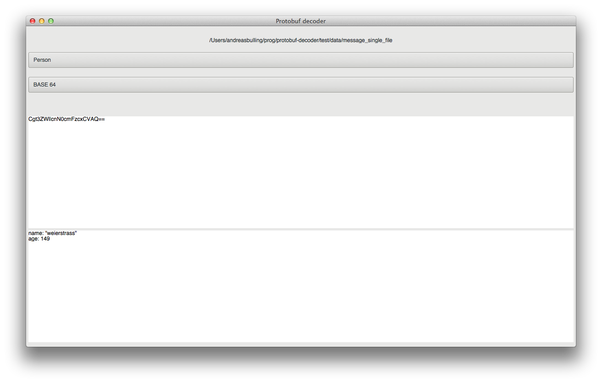

Find out what's hiding in the binary...
Are you working with protocol buffer and wants to know what is actually inside the serialized binary data, then you might find this tool handy.
Download the latest release here

Are you working with protocol buffer and wants to know what is actually inside the serialized binary data, then you might find this tool handy.
Download the latest release here
